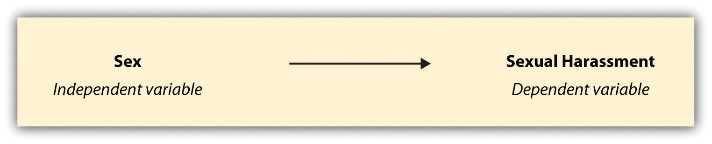
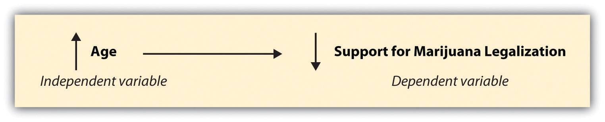

Now that you’ve figured out what to study, you need to figure out how to study it. Your library research can help in this regard. Reading published studies is a great way to familiarize yourself with the various components of a research project. It will also bring to your attention some of the major considerations to keep in mind when designing a research project. We’ll say more about reviewing the literature near the end of this chapter, but we’ll begin with a focus on research design. We’ll discuss the decisions you need to make about the goals of your research, the major components of a research project, along with a few additional aspects of designing research.
A recent news story about college students’ addictions to electronic gadgets (Lisk, 2011)Lisk, J. (2011). Addiction to our electronic gadgets. Retrieved from http://www.cnn.com/video/#/video/health/2011/03/01/hm.election.addiction.cnn?iref=allsearch describes findings from some current research by Professor Susan Moeller and colleagues from the University of Maryland (http://withoutmedia.wordpress.com). The story raises a number of interesting questions. Just what sorts of gadgets are students addicted to? How do these addictions work? Why do they exist, and who is most likely to experience them?
Sociological research is great for answering just these sorts of questions. But in order to answer our questions well, we must take care in designing our research projects. In this chapter, we’ll consider what aspects of a research project should be considered at the beginning, including specifying the goals of the research, the components that are common across most research projects, and a few other considerations.
One of the first things to think about when designing a research project is what you hope to accomplish, in very general terms, by conducting the research. What do you hope to be able to say about your topic? Do you hope to gain a deep understanding of whatever phenomenon it is that you’re studying, or would you rather have a broad, but perhaps less deep, understanding? Do you want your research to be used by policymakers or others to shape social life, or is this project more about exploring your curiosities? Your answers to each of these questions will shape your research design.
You’ll need to decide in the beginning phases whether your research will be exploratory, descriptive, or explanatory. Each has a different purpose, so how you design your research project will be determined in part by this decision.
Researchers conducting exploratory researchResearch that aims to satisfy a researcher’s curiosity about a topic or test the feasibility of a more extensive study. are typically at the early stages of examining their topics. These sorts of projects are usually conducted when a researcher wants to test the feasibility of conducting a more extensive study; he or she wants to figure out the lay of the land, with respect to the particular topic. Perhaps very little prior research has been conducted on this subject. If this is the case, a researcher may wish to do some exploratory work to learn what method to use in collecting data, how best to approach research subjects, or even what sorts of questions are reasonable to ask. A researcher wanting to simply satisfy his or her own curiosity about a topic could also conduct exploratory research. In the case of the study of college students’ addictions to their electronic gadgets, a researcher conducting exploratory research on this topic may simply wish to learn more about students’ use of these gadgets. Because these addictions seem to be a relatively new phenomenon, an exploratory study of the topic might make sense as an initial first step toward understanding it.
In my research on child-free adults, I was unsure what the results might be when first embarking on the study. There was very little empirical research on the topic, so the initial goal of the research was simply to get a better grasp of what child-free people’s lives are like and how their decision to be child free shapes their relationships and everyday experiences. Conducting exploratory research on the topic was a necessary first step, both to satisfy my curiosity about the subject and to better understand the phenomenon and the research participants in order to design a larger, subsequent study.
Sometimes the goal of research is to describe or define a particular phenomenon. In this case, descriptive researchResearch that aims to describe or define. would be an appropriate strategy. A descriptive study of college students’ addictions to their electronic gadgets, for example, might aim to describe patterns in how use of gadgets varies by gender or college major or which sorts of gadgets students tend to use most regularly.
Researchers at the Princeton Review conduct descriptive research each year when they set out to provide students and their parents with information about colleges and universities around the United States (http://www.princetonreview.com). They describe the social life at a school, the cost of admission, and student-to-faculty ratios (to name just a few of the categories reported). Although students and parents may be able to obtain much of this information on their own, having access to the data gathered by a team of researchers is much more convenient and less time consuming.
Market researchers also rely on descriptive research to tell them what consumers think of their products. In fact, descriptive research has many useful applications, and you probably rely on findings from descriptive research without even being aware that that is what you are doing.
Finally, sociological researchers often aim to explain why particular phenomena work in the way that they do. Research that answers “why” questions is referred to as explanatory researchResearch that aims to identify causes and effects.. In this case, the researcher is trying to identify the causes and effects of whatever phenomenon he or she is studying. An explanatory study of college students’ addictions to their electronic gadgets might aim to understand why students become addicted. Does it have anything to do with their family histories? With their other extracurricular hobbies and activities? With whom they spend their time? An explanatory study could answer these kinds of questions.
There are numerous examples of explanatory social scientific investigations. For example, in a recent study, Dominique Simons and Sandy Wurtele (2010)Simons, D. A., & Wurtele, S. K. (2010). Relationships between parents’ use of corporal punishment and their children’s endorsement of spanking and hitting other children. Child Abuse & Neglect, 34, 639–646. sought to discover whether receiving corporal punishment from parents led children to turn to violence in solving their interpersonal conflicts with other children. In their study of 102 families with children between the ages of 3 and 7, the researchers found that experiencing frequent spanking did, in fact, result in children being more likely to accept aggressive problem-solving techniques. Another example of explanatory research can be seen in Robert Faris and Diane Felmlee’s research (2011; American Sociological Association, 2011)Faris, R., & Felmlee, D. (2011). Status struggles: Network centrality and gender segregation in same- and cross-gender aggression. American Sociological Review, 76, 48–73; the American Sociological Association wrote a press release summarizing findings from the study. You can read it at http://asanet.org/press/Press_Release_Popular_Kids_More_Likely_to_Torment_Peers.cfm. The study has also been covered by several media outlets: Pappas, S. (2011). Popularity increases aggression in kids, study finds. Retrieved from http://www.livescience.com/11737-popularity-increases-aggression-kids-study-finds.html on the connections between popularity and bullying. They found, from their study of 8th, 9th, and 10th graders in 19 North Carolina schools, that as adolescents’ popularity increases, so, too, does their aggression.This pattern was found until adolescents reached the top 2% in the popularity ranks. After that, aggression declines.
Once you decide whether you will conduct exploratory, descriptive, or explanatory research, you will need to determine whether you want your research to be idiographic or nomothetic. A decision to conduct idiographic researchExhaustive, detailed descriptions or explanations of a singular or very small number of individuals, phenomena, or groups. means that you will attempt to explain or describe your phenomenon exhaustively. While you might have to sacrifice some breadth of understanding if you opt for an idiographic explanation, you will gain a much deeper, richer understanding of whatever phenomenon or group you are studying than you would if you were to pursue nomothetic research. A decision to conduct nomothetic researchGeneral, broad descriptions or explanations of many individuals, phenomena, or groups., on the other hand, means that you will aim to provide a more general, sweeping explanation or description of your topic. In this case, you sacrifice depth of understanding in favor of breadth of understanding.
Let’s look at some specific examples. As a graduate student, I conducted an in-depth study of breast cancer activism (Blackstone, 2003).Blackstone, A. (2003). Racing for the cure and taking back the night: Constructing gender, politics, and public participation in women’s activist/volunteer work. PhD dissertation, Department of Sociology, University of Minnesota, Minneapolis, MN. To do so, I joined an organization of local activists and participated in just about every aspect of the organization over a period of about 18 months. Perhaps it goes without saying, but over the course of a year and a half of participant observation, I learned quite a bit about this organization and its members. In other words, the study revealed the particular idiosyncrasies of the group, but it did not reveal much about the inner workings of other breast cancer activist organizations. Armed with an in-depth understanding about this single group, the study made a contribution to knowledge about how activists operate. For one thing, the organization I observed happened to be one of the largest and most well known of its type at the time, and many other organizations in the movement looked to this organization for ideas about how to operate. Understanding how this model organization worked was important for future activist efforts in a variety of organizations. Further, the study revealed far more intimate details of the inner workings of an activist organization than had it, say, instead been a survey of the top 50 breast cancer organizations in the United States (though that would have been an interesting study as well).
My collaborative research on workplace sexual harassment (Uggen & Blackstone, 2004),Uggen, C., & Blackstone, A. (2004). Sexual harassment as a gendered expression of power. American Sociological Review, 69, 64–92. on the other hand, aims to provide more sweeping descriptions and explanations. For this nomothetic research project, we mailed surveys to a large sample of young workers who look very much like their peers in terms of their jobs, social class background, gender, and other categories. Because of these similarities, we have been able to speak generally about what young workers’ experiences with sexual harassment are like. In an idiographic study of the same topic, the research team might follow a few workers around every day for a long period of time or conduct a series of very detailed, and lengthy, interviews with 10 or 15 workers.
Finally, you will need to decide what sort of contribution you hope to make with your research. Do you want others to be able to use your research to shape social life? If so, you may wish to conduct a study that policymakers could use to change or create a specific policy. Perhaps, on the other hand, you wish to conduct a study that will contribute to sociological theories or knowledge without having a specific applied use in mind. In the example of the news story on students’ addictions to technological gadgets, an applied study of this topic might aim to understand how to treat such addictions. A basic study of the same topic, on the other hand, might examine existing theories of addiction and consider how this new type of addiction does or does not apply; perhaps your study could suggest ways that such theories may be tweaked to encompass technological addictions.
In Chapter 1 "Introduction", we learned about both applied and basic research. When designing your research project, think about where you envision your work fitting in on the applied–basic continuum. Recognize, however, that even basic research may ultimately be used for some applied purpose. Similarly, your applied research might not turn out to be applicable to the particular real-world social problem you were trying to solve, but it might better our theoretical understanding of some phenomenon. In other words, deciding now whether your research will be basic or applied doesn’t mean that will be its sole purpose forever. Basic research may ultimately be applied, and applied research can certainly contribute to general knowledge. Nevertheless, it is important to think in advance about what contribution(s) you hope to make with your research.
In Chapter 1 "Introduction", we discussed the importance of understanding the differences between qualitative and quantitative research methods. Because this distinction is relevant to how researchers design their projects, we’ll revisit it here.
When designing a research project, how issues of causality are attended to will in part be determined by whether the researcher plans to collect qualitative or quantitative data. CausalityThe idea that one event, behavior, or belief will result in the occurrence of another, subsequent event, behavior, or belief. refers to the idea that one event, behavior, or belief will result in the occurrence of another, subsequent event, behavior, or belief. In other words, it is about cause and effect.
In a qualitative study, it is likely that you will aim to acquire an idiographic understanding of the phenomenon that you are investigating. Using our example of students’ addictions to electronic gadgets, a qualitative researcher might aim to understand the multitude of reasons that two roommates exhibit addictive tendencies when it comes to their various electronic devices. The researcher might spend time in the dorm room with them, watching how they use their devices, follow them to class and watch them there, observe them at the cafeteria, and perhaps even observe them during their free time. At the end of this very intensive, and probably exhausting, set of observations, the researcher should be able to identify some of the specific causes of each student’s addiction. Perhaps one of the two roommates is majoring in media studies, and all her classes require her to have familiarity with and to regularly use a variety of electronic gadgets. Perhaps the other roommate has friends or family who live overseas, and she relies on a variety of electronic devices to communicate with them. Perhaps both students have a special interest in playing and listening to music, and their electronic gadgets help facilitate this hobby. Whatever the case, in a qualitative study that seeks idiographic understanding, a researcher would be looking to understand the plethora of reasons (or causes) that account for the behavior he or she is investigating.
In a quantitative study, on the other hand, a researcher is more likely to aim for a nomothetic understanding of the phenomenon that he or she is investigating. In this case, the researcher may be unable to identify the specific idiosyncrasies of individual people’s particular addictions. However, by analyzing data from a much larger and more representative group of students, the researcher will be able to identify the most likely, and more general, factors that account for students’ addictions to electronic gadgets. The researcher might choose to collect survey data from a wide swath of college students from around the country. He might find that students who report addictive tendencies when it comes to their gadgets also tend to be people who can identity which of Steven Seagal’s movies he directed, are more likely to be men, and tend to engage in rude or disrespectful behaviors more often than nonaddicted students. It is possible, then, that these associations can be said to have some causal relationship to electronic gadget addiction. However, items that seem to be related are not necessarily causal. To be considered causally related in a nomothetic study, such as the survey research in this example, there are a few criteria that must be met.
The main criteria for causality have to do with plausibility, temporality, and spuriousness. Plausibility means that in order to make the claim that one event, behavior, or belief causes another, the claim has to make sense. For example, if we attend a series of lectures during which a student’s incessant midclass texting or web surfing gets in the way of our ability to focus on the lecture, we might begin to wonder whether people who have a propensity to be rude are more likely to have a propensity to be addicted to their electronic gadgets (and therefore use them during class). However, the fact that there might be a relationship between general rudeness and gadget addiction does not mean that a student’s rudeness could cause him to be addicted to his gadgets. In other words, just because there might be some correlationA relationship between two variables. between two variables does not mean that a causal relationship between the two is really plausible.
The criterion of temporalityIn social science, this refers to the rule that a cause must precede an effect in time. means that whatever cause you identify must precede its effect in time. As noted earlier, a survey researcher examining the causes of students’ electronic gadget addictions might find that more men than women exhibit addictive tendencies when it comes to their electronic gadgets. Thus the researcher has found a correlation between gender and addiction. So does this mean that a person’s gadget addiction determines his or her gender? Probably not, not only because this doesn’t make any sense but also because a person’s gender identity is most typically formed long before he or she is likely to own any electronic gadgets. Thus gender precedes electronic gadget ownership (and subsequent addiction) in time.
Finally, a spurious relationshipA relationship in which two variables appear to be causal but can in fact be explained by some third variable. is one in which an association between two variables appears to be causal but can in fact be explained by some third variable. In the example of a survey assessing students’ addictions to electronic gadgets, the researcher might have found that those who can identify which of Steven Seagal’s films the actor himself directed also exhibit addiction to their electronic gadgets.In case you’re curious, a visit to the Internet Movie Database will tell you that Seagal directed just one of his films, 1994’s On Deadly Ground: http://www.imdb.com/name/nm0000219. This relationship is exemplified in Figure 5.5.
So does knowledge about Seagal’s directorial prowess cause gadget addiction? Probably not. A more likely explanation is that being a man makes a person both more likely to know about Seagal’s films and more likely to be addicted to electronic gadgets. In other words, there is a third variable that explains the relationship between Seagal movie knowledge and electronic gadget addiction. This relationship is exemplified in Figure 5.6.
Let’s consider a few additional, real-world examples of spuriousness. Did you know, for example, that high rates of ice cream sales have been shown to cause drowning? Of course that’s not really true, but there is a positive relationship between the two. In this case, the third variable that causes both high ice cream sales and increased deaths by drowning is time of year, as the summer season sees increases in both (Babbie, 2010).Babbie, E. (2010). The practice of social research (12th ed.). Belmont, CA: Wadsworth. Here’s another good one: it is true that as the salaries of Presbyterian ministers in Massachusetts rise, so, too, does the price of rum in Havana, Cuba. Well, duh, you might be saying to yourself. Everyone knows how much ministers in Massachusetts love their rum, right? Not so fast. Both salaries and rum prices have increased, true, but so has the price of just about everything else (Huff & Geis, 1993).Huff, D., & Geis, I. (1993). How to lie with statistics. New York, NY: Norton. Finally, research shows that the more firefighters present at a fire, the more damage is done at the scene. What this statement leaves out, of course, is that as the size of a fire increases so, too, does the amount of damage caused as does the number of firefighters called on to help (Frankfort-Nachmias & Leon-Guerro, 2011).Frankfort-Nachmias, C., & Leon-Guerro, A. (2011). Social statistics for a diverse society (6th ed.). Thousand Oaks, CA: Pine Forge Press. In each of these examples, it is the presence of a third variable that explains the apparent relationship between the two original variables.
In sum, the following criteria must be met in order for a correlation to be considered causal:
What we’ve been talking about here is relationships between variables. When one variable causes another, we have what researchers call independent and dependent variables. In the example where gender was found to be causally linked to electronic gadget addiction, gender would be the independent variable and electronic gadget addiction would be the dependent variable. An independent variableA variable that causes another. is one that causes another. A dependent variableA variable that is caused by another. is one that is caused by another. Dependent variables depend on independent variables.
Relationship strength is another important factor to take into consideration when attempting to make causal claims if your research approach is nomothetic. I’m not talking strength of your friendships or marriage (though of course that sort of strength might affect your likelihood to keep your friends or stay married). In this context, relationship strength refers to statistical significance. The more statistically significant a relationship between two variables is shown to be, the greater confidence we can have in the strength of that relationship. We’ll discuss statistical significance in greater detail in Chapter 7 "Sampling". For now, keep in mind that for a relationship to be considered causal, it cannot exist simply because of the chance selection of participants in a study.
Some research methods, such as those used in qualitative and idiographic research, are not conducive to making predictions about when events or behaviors will occur. In these cases, what we are instead able to do is gain some understanding of the circumstances under which those causal relationships occur: to understand the how of causality. Qualitative research sometimes relies on quantitative work to point toward a relationship that may be interesting to investigate further. For example, if a quantitative researcher learns that men are statistically more likely than women to become addicted to their electronic gadgets, a qualitative researcher may decide to conduct some in-depth interviews and observations of men and women to learn more about how the different contexts and circumstances of men’s and women’s lives might shape their respective chances of becoming addicted. In other words, the qualitative researcher works to understand the contexts in which various causes and effects occur.
Another point to consider when designing a research project, and which might differ slightly in qualitative and quantitative studies, has to do with units of analysisThe entity that a researcher wishes to be able to say something about at the end of his or her study; the main focus of the study. and units of observationThe item (or items) that a researcher actually observes, measures, or collects in the course of trying to learn something about his or her unit of analysis.. These two items concern what you, the researcher, actually observe in the course of your data collection and what you hope to be able to say about those observations. A unit of analysis is the entity that you wish to be able to say something about at the end of your study, probably what you’d consider to be the main focus of your study. A unit of observation is the item (or items) that you actually observe, measure, or collect in the course of trying to learn something about your unit of analysis. In a given study, the unit of observation might be the same as the unit of analysis, but that is not always the case. Further, units of analysis are not required to be the same as units of observation. What is required, however, is for researchers to be clear about how they define their units of analysis and observation, both to themselves and to their audiences.
More specifically, your unit of analysis will be determined by your research question. Your unit of observation, on the other hand, is determined largely by the method of data collection that you use to answer that research question. We’ll take a closer look at methods of data collection in Chapter 8 "Survey Research: A Quantitative Technique" through Chapter 12 "Other Methods of Data Collection and Analysis". For now, let’s go back to the example we’ve been discussing over the course of this chapter, students’ addictions to electronic gadgets. We’ll consider first how different kinds of research questions about this topic will yield different units of analysis. Then we’ll think about how those questions might be answered and with what kinds of data. This leads us to a variety of units of observation.
If we were to ask, “Which students are most likely to be addicted to their electronic gadgets?” our unit of analysis would be the individual. We might mail a survey to students on campus, and our aim would be to classify individuals according to their membership in certain social classes in order to see how membership in those classes correlated with gadget addiction. For example, we might find that majors in new media, men, and students with high socioeconomic status are all more likely than other students to become addicted to their electronic gadgets. Another possibility would be to ask, “How do students’ gadget addictions differ, and how are they similar?” In this case, we could conduct observations of addicted students and record when, where, why, and how they use their gadgets. In both cases, one using a survey and the other using observations, data are collected from individual students. Thus the unit of observation in both examples is the individual. But the units of analysis differ in the two studies. In the first one, our aim is to describe the characteristics of individuals. We may then make generalizations about the populations to which these individuals belong, but our unit of analysis is still the individual. In the second study, we will observe individuals in order to describe some social phenomenon, in this case, types of gadget addictions. Thus our unit of analysis would be the social phenomenon.
Another common unit of analysis in sociological inquiry is groups. Groups of course vary in size, and almost no group is too small or too large to be of interest to sociologists. Families, friendship groups, and street gangs make up some of the more common microlevel groups examined by sociologists. Employees in an organization, professionals in a particular domain (e.g., chefs, lawyers, sociologists), and members of clubs (e.g., Girl Scouts, Rotary, Red Hat Society) are all mesolevel groups that sociologists might study. Finally, at the macro level, sociologists sometimes examine citizens of entire nations or residents of different continents or other regions.
A study of student addictions to their electronic gadgets at the group level might consider whether certain types of social clubs have more or fewer gadget-addicted members than other sorts of clubs. Perhaps we would find that clubs that emphasize physical fitness, such as the rugby club and the scuba club, have fewer gadget-addicted members than clubs that emphasize cerebral activity, such as the chess club and the sociology club. Our unit of analysis in this example is groups. If we had instead asked whether people who join cerebral clubs are more likely to be gadget-addicted than those who join social clubs, then our unit of analysis would have been individuals. In either case, however, our unit of observation would be individuals.
Organizations are yet another potential unit of analysis that social scientists might wish to say something about. As you may recall from your introductory sociology class, organizations include entities like corporations, colleges and universities, and even night clubs. At the organization level, a study of students’ electronic gadget addictions might ask, “How do different colleges address the problem of electronic gadget addiction?” In this case, our interest lies not in the experience of individual students but instead in the campus-to-campus differences in confronting gadget addictions. A researcher conducting a study of this type might examine schools’ written policies and procedures, so his unit of observation would be documents. However, because he ultimately wishes to describe differences across campuses, the college would be his unit of analysis.
Of course, it would be silly in a textbook focused on social scientific research to neglect social phenomena as a potential unit of analysis. I mentioned one such example earlier, but let’s look more closely at this sort of unit of analysis. Many sociologists study a variety of social interactions and social problems that fall under this category. Examples include social problems like murder or rape; interactions such as counseling sessions, Facebook chatting, or wrestling; and other social phenomena such as voting and even gadget use or misuse. A researcher interested in students’ electronic gadget addictions could ask, “What are the various types of electronic gadget addictions that exist among students?” Perhaps the researcher will discover that some addictions are primarily centered around social media such as chat rooms, Facebook, or texting while other addictions center on gadgets such as handheld, single-player video games or DVR devices that discourage interaction with others. The resultant typology of gadget addictions would tell us something about the social phenomenon (unit of analysis) being studied. As in several of the preceding examples, however, the unit of observation would likely be individual people.
Finally, a number of social scientists examine policies and principles, the last type of unit of analysis we’ll consider here. Studies that analyze policies and principles typically rely on documents as the unit of observation. Perhaps a researcher has been hired by a college to help it write an effective policy against electronic gadget addiction. In this case, the researcher might gather all previously written policies from campuses all over the country and compare policies at campuses where addiction rates are low to policies at campuses where addiction rates are high.
In sum, there are many potential units of analysis that a sociologist might examine, but some of the most common units include the following:
Table 5.1 "Units of Analysis and Units of Observation: An Example Using a Hypothetical Study of Students’ Addictions to Electronic Gadgets" includes a summary of the preceding discussion of units of analysis and units of observation.
Table 5.1 Units of Analysis and Units of Observation: An Example Using a Hypothetical Study of Students’ Addictions to Electronic Gadgets
| Research question | Unit of analysis | Data collection | Unit of observation | Statement of findings |
|---|---|---|---|---|
| Which students are most likely to be addicted to their electronic gadgets? | Individuals | Survey of students on campus | Individuals | New Media majors, men, and students with high socioeconomic status are all more likely than other students to become addicted to their electronic gadgets. |
| Do certain types of social clubs have more gadget-addicted members than other sorts of clubs? | Groups | Survey of students on campus | Individuals | Clubs with a scholarly focus, such as the sociology club and the math club, have more gadget-addicted members than clubs with a social focus, such as the 100-bottles-of-beer-on-the-wall club and the knitting club. |
| How do different colleges address the problem of electronic gadget addiction? | Organizations | Content analysis of policies | Documents | Campuses without strong computer science programs are more likely than those with such programs to expel students who have been found to have addictions to their electronic gadgets. |
| What are the various types of electronic gadget addictions that exist among students? | Social phenomena | Observations of students | Individuals | There are two main types of gadget addiction: social and antisocial. |
| What are the most effective policies against electronic gadget addiction? | Policies and principles | Content analysis of policies and student records | Documents | Policies that require students found to have an addiction to their electronic gadgets to attend group counseling for a minimum of one semester have been found to treat addictions more effectively than those that call for the expulsion of addicted students. |
| Note: Please don’t forget that the findings described here are hypothetical. There is no reason to think that any of the hypothetical findings described here would actually bear out if tested with empirical research. | ||||
One common error we see people make when it comes to both causality and units of analysis is something called the ecological fallacyOccurs when claims are made about individuals based on group-level data.. This occurs when claims about one lower-level unit of analysis are made based on data from some higher-level unit of analysis. In many cases, this occurs when claims are made about individuals, but only group-level data have been gathered. For example, we might want to understand whether electronic gadget addictions are more common on certain campuses than on others. Perhaps different campuses around the country have provided us with their campus percentage of gadget-addicted students, and we learn from these data that electronic gadget addictions are more common on campuses that have business programs than on campuses without them. We then conclude that business students are more likely than nonbusiness students to become addicted to their electronic gadgets. However, this would be an inappropriate conclusion to draw. Because we only have addiction rates by campus, we can only draw conclusions about campuses, not about the individual students on those campuses. Perhaps the sociology majors on the business campuses are the ones that caused the addiction rates on those campuses to be so high. The point is we simply don’t know because we only have campus-level data. By drawing conclusions about students when our data are about campuses, we run the risk of committing the ecological fallacy.
On the other hand, another mistake to be aware of is reductionismOccurs when claims about groups are made based on individual-level data.. Reductionism occurs when claims about some higher-level unit of analysis are made based on data from some lower-level unit of analysis. In this case, claims about groups or macrolevel phenomena are made based on individual-level data. An example of reductionism can be seen in some descriptions of the civil rights movement. On occasion, people have proclaimed that Rosa Parks started the civil rights movement in the United States by refusing to give up her seat to a white person while on a city bus in Montgomery, Alabama, in December 1955. Although it is true that Parks played an invaluable role in the movement, and that her act of civil disobedience gave others courage to stand up against racist policies, beliefs, and actions, to credit Parks with starting the movement is reductionist. Surely the confluence of many factors, from fights over legalized racial segregation to the Supreme Court’s historic decision to desegregate schools in 1954 to the creation of groups such as the Student Nonviolent Coordinating Committee (to name just a few), contributed to the rise and success of the American civil rights movement. In other words, the movement is attributable to many factors—some social, others political, others economic. Did Parks play a role? Of course she did—and a very important one at that. But did she cause the movement? To say yes would be reductionist.
It would be a mistake to conclude from the preceding discussion that researchers should avoid making any claims whatsoever about data or about relationships between variables. While it is important to be attentive to the possibility for error in causal reasoning about different levels of analysis, this warning should not prevent you from drawing well-reasoned analytic conclusions from your data. The point is to be cautious but not abandon entirely the social scientific quest to understand patterns of behavior.
In some cases, the purpose of research is to test a specific hypothesis or hypotheses. At other times, researchers do not have predictions about what they will find but instead conduct research to answer a question or questions, with an open-minded desire to know about a topic, or to help develop hypotheses for later testing. A hypothesisA statement drawn from theory that posits a researcher’s expectation about the relationship between two or more variables. Hypotheses are often causal though they do not have to be. is a statement, sometimes but not always causal, describing a researcher’s expectation regarding what he or she anticipates finding. Often hypotheses are written to describe the expected relationship between two variables (though this is not a requirement). To develop a hypothesis, one needs to have an understanding of the differences between independent and dependent variables and between units of observation and units of analysis. Hypotheses are typically drawn from theories and usually describe how an independent variable is expected to affect some dependent variable or variables. Researchers following a deductive approach to their research will hypothesize about what they expect to find based on the theory or theories that frame their study. If the theory accurately reflects the phenomenon it is designed to explain, then the researcher’s hypotheses about what he or she will observe in the real world should bear out.
Let’s consider a couple of examples. In my collaborative research on sexual harassment (Uggen & Blackstone, 2004),Uggen, C., & Blackstone, A. (2004). Sexual harassment as a gendered expression of power. American Sociological Review, 69, 64–92. we once hypothesized, based on feminist theories of sexual harassment, that “more females than males will experience specific sexually harassing behaviors.” What is the causal relationship being predicted here? Which is the independent and which is the dependent variable? In this case, we hypothesized that a person’s sex (independent variable) would predict her or his likelihood to experience sexual harassment (dependent variable).
Sometimes researchers will hypothesize that a relationship will take a specific direction. As a result, an increase or decrease in one area might be said to cause an increase or decrease in another. For example, you might choose to study the relationship between age and legalization of marijuana. Perhaps you’ve done some reading in your crime and deviance class and, based on the theories you’ve read, you hypothesize that “age is negatively related to support for marijuana legalization.”In fact, there are empirical data that support this hypothesis. Gallup has conducted research on this very question since the 1960s. For more on their findings, see Carroll, J. (2005). Who supports marijuana legalization? Retrieved from http://www.gallup.com/poll/19561/who-supports-marijuana-legalization.aspx What have you just hypothesized? You have hypothesized that as people get older, the likelihood of their supporting marijuana legalization decreases. Thus as age (your independent variable) moves in one direction (up), support for marijuana legalization (your dependent variable) moves in another direction (down). If writing hypotheses feels tricky, it is sometimes helpful to draw them out. Figure 5.8 "Hypothesis Describing the Expected Relationship Between Sex and Sexual Harassment" and Figure 5.9 "Hypothesis Describing the Expected Direction of Relationship Between Age and Support for Marijuana Legalization" depict each of the two hypotheses we have just discussed.
Figure 5.8 Hypothesis Describing the Expected Relationship Between Sex and Sexual Harassment
Figure 5.9 Hypothesis Describing the Expected Direction of Relationship Between Age and Support for Marijuana Legalization
Note that you will almost never hear researchers say that they have proven their hypotheses. A statement that bold implies that a relationship has been shown to exist with absolute certainty and that there is no chance that there are conditions under which the hypothesis would not bear out. Instead, researchers tend to say that their hypotheses have been supported (or not). This more cautious way of discussing findings allows for the possibility that new evidence or new ways of examining a relationship will be discovered. Researchers may also discuss a null hypothesisThe assumption that no relationship exists between variables in question., one that predicts no relationship between the variables being studied. If a researcher rejects the null hypothesis, he or she is saying that the variables in question are somehow related to one another.
Quantitative and qualitative researchers tend to take different approaches when it comes to hypotheses. In quantitative research, the goal often is to empirically test hypotheses generated from theory. With a qualitative approach, on the other hand, a researcher may begin with some vague expectations about what he or she will find, but the aim is not to test one’s expectations against some empirical observations. Instead, theory development or construction is the goal. Qualitative researchers may develop theories from which hypotheses can be drawn and quantitative researchers may then test those hypotheses. Both types of research are crucial to understanding our social world, and both play an important role in the matter of hypothesis development and testing.
Up to this point, we have discussed research design as though it is an either/or proposition. Either you will collect qualitative data or you will collect quantitative data. Either your approach will be idiographic or it will be nomothetic. In truth, you don’t necessarily have to choose one approach over another. In fact, some of the most highly regarded social scientific investigations combine approaches in an effort to gain the most complete understanding of their topic possible. Using a combination of multiple and different research strategies is called triangulationThe use of several different research strategies to enhance understanding of a topic..
Think about the examples we’ve discussed of potential studies of electronic gadget addiction. Now imagine that you could conduct two, or even three, of those studies instead of just one. What if you could conduct a survey of students on campus, a content analysis of campus policies, and observations of students in their natural environments (Brewer & Hunter, 1989; Tashakkori & Teddlie, 1989)?Triangulation isn’t just about using multiple strategies of data collection. Triangulation of measures occurs when researchers use multiple approaches to measure a single variable. Triangulation of theories occurs when researchers rely on multiple theories to help explain a single event or phenomenon. If you’d like to learn more about triangulation, the following sources may be of interest: Brewer, J., & Hunter, A. (1989). Multimethod research: A synthesis of styles. Newbury Park, CA: Sage; Tashakkori, A., & Teddlie, C. (1998). Mixed methodology: Combining qualitative and quantitative approaches. Thousand Oaks, CA: Sage. Aside from being pretty exhausted, and possibly broke, you’d probably end up with a fairly comprehensive understanding of the causes and consequences of, and campus responses to, students’ electronic gadget addictions. And certainly a more comprehensive understanding is better than a less comprehensive one. The drawback, of course, is that you may not have the resources, because of either limited time or limited funding, to conduct such a wide-ranging study.
At this stage, you may be telling yourself (or screaming at me) that it would be nearly impossible to conduct all these studies yourself. You have a life, after all. The good news is that you don’t necessarily have to do everything on your own in order to take advantage of the analytic benefits of triangulation. Perhaps someone already has conducted a large survey of the topic you wish to study. You could find out how those results compare with your one-on-one interviews with people on the same topic. Or perhaps you wish to administer a survey to test the generality of some findings that have been reached through the use of field methods. Whatever the case, don’t forget about all the good research that has come before you that can help strengthen your investigation. Also keep in mind that qualitative and quantitative research methods can be complementary. Triangulation is one way to take advantage of the best in both approaches.
In this section, we’ll examine the most typical components that make up a research project, bringing in a few additional components to those we have already discussed. Keep in mind that our purpose at this stage is simply to provide a general overview of research design. The specifics of each of the following components will vary from project to project. Further, the stage of a project at which each of these components comes into play may vary. In later chapters, we will consider more specifically how these components work differently depending on the research method being employed.
Familiarizing yourself with research that has already been conducted on your topic is one of the first stages of conducting a research project and is crucial for coming up with a good research design. But where to start? How to start? In Chapter 4 "Beginning a Research Project", you learned about some of the most common databases that house information about published sociological research. As you search for literature, you may have to be fairly broad in your search for articles.
I’m guessing you may feel you’ve heard enough about electronic gadget addiction in this chapter, so let’s consider a different example here. On my campus, much to the chagrin of a group of student smokers, smoking was recently banned. These students were so upset by the idea that they would no longer be allowed to smoke on university grounds that they staged several smoke-outs during which they gathered in populated areas around campus and enjoyed a puff or two together.
A student in my research methods class wanted to understand what motivated this group of students to engage in activism centered around what she perceived to be, in this age of smoke-free facilities, a relatively deviant act. Were the protesters otherwise politically active? How much effort and coordination had it taken to organize the smoke-outs? The student researcher began her research by attempting to familiarize herself with the literature on her topic. Yet her search in Sociological Abstracts for “college student activist smoke-outs,” yielded no results. Concluding there was no prior research on her topic, she informed me that she would need an alternative assignment to the annotated bibliographyA list of sources relevant to a person’s research project. The list is usually presented in alphabetical order, using the citation format of the researcher’s profession. It includes a brief summary of each source’s point of focus, theoretical argument, and major findings underneath each citation. Some annotated bibliographies also contain a brief critique or evaluation of each source. I required since there was no literature for her to review. How do you suppose I responded to this news? What went wrong with this student’s search for literature?
In her first attempt, the student had been too narrow in her search for articles. But did that mean she was off the hook for completing the annotated bibliography assignment? Absolutely not. Instead, she went back to Sociological Abstracts and searched again using different combinations of search terms. Rather than searching for “college student activist smoke-outs” she tried, among other sets of terms, “college student activism.” This time her search yielded a great many articles. Of course, they were not focused on prosmoking activist efforts, but they were focused on her population of interest, college students, and on her broad topic of interest, activism. I suggested that reading articles on college student activism might give her some idea about what other researchers have found in terms of what motivates college students to become involved in activist efforts. I also suggested she could play around with her search terms and look for research on activism centered on other sorts of activities that are perceived by some as deviant, such as marijuana use or veganism. In other words, she needed to be broader in her search for articles.
While this student found success by broadening her search for articles, her reading of those articles needed to be narrower than her search. Once she identified a set of articles to review by searching broadly, it was time to remind herself of her specific research focus: college student activist smoke-outs. Keeping in mind her particular research interest while reviewing the literature gave her the chance to think about how the theories and findings covered in prior studies might or might not apply to her particular point of focus. For example, theories on what motivates activists to get involved might tell her something about the likely reasons the students she planned to study got involved. At the same time, those theories might not cover all the particulars of student participation in smoke-outs. Thinking about the different theories then gave the student the opportunity to focus her research plans and even to develop a few hypotheses about what she thought she was likely to find.
Developing an annotated bibliography is often one of the early steps that researchers take as they begin to familiarize themselves with prior research on their topic. A second step involves a literature review in which a researcher positions his or her work within the context of prior scholarly work in the area. A literature review addresses the following matters: What sorts of questions have other scholars asked about this topic? What do we already know about this topic? What questions remain? As the researcher answers these questions, he or she synthesizes what is contained in the literature, possibly organizing prior findings around themes that are relevant to his or her particular research focus.
I once advised an undergraduate student who conducted a research project on speciesism, the belief that some species are superior to or have more value and rights than others. Her research question was “Why and how do humans construct divisions between themselves and animals?” This student organized her review of literature around the two parts of her research question: the why and the how. In the “why” section of her literature review, she described prior research that addressed questions of why humans are sometimes speciesist. She organized subsections around the three most common answers that were presented in the scholarly literature. She used the same structure in the “how” section of her literature review, arranging subsections around the answers posed in previous literature about how humans construct divisions between themselves and animals. This organizational scheme helped readers understand what we already know about the topic and what theories we rely on to help make sense of the topic. In addition, by also highlighting what we still don’t know, it helped the student set the stage for her own empirical research on the topic.
The preceding discussion about how to organize a review of scholarly literature assumes that we all know how to read scholarly literature. Yes, yes, I understand that you must know how to read. But reading scholarly articles can be a bit more challenging than reading a textbook. Here are a few pointers about how to do it successfully. First, it is important to understand the various sections that are typically contained in scholarly journals’ reports of empirical research. One of the most important and easiest to spot sections of a journal article is its abstractA short paragraph at the beginning of a journal article that summarizes the author’s research question(s), research method(s), and key findings., the short paragraph at the beginning of an article that summarizes the author’s research question, methods used to answer the question, and key findings. The abstract may also give you some idea about the theoretical proclivities of the author. As a result, reading the abstract gives you both a framework for understanding the rest of the article and the punch line. It tells you what the author(s) found and whether the article is relevant to your area of inquiry.
After the abstract, most journal articles will contain the following sections (although exact section names are likely to vary): introduction, literature review, methodology, findings, and discussion. Of course, there will also be a list of references cited,Lists of references cited are a useful source for finding additional literature in an area. and there may be a few tables, figures, or appendices at the end of the article as well. While you should get into the habit of familiarizing yourself with articles you wish to cite in their entirety, there are strategic ways to read journal articles that can make them a little easier to digest. Once you have read the abstract and determined that this is an article you’d like to read in full, read through the discussion section at the end of the article next. Because your own review of literature is likely to emphasize findings from previous literature, you should make sure that you have a clear idea about what those findings are. Reading an article’s discussion section helps you understand what the author views as the study’s major findings and how the author perceives those findings to relate to other research.
As you read through the rest of the article, think about the elements of research design that we have covered in this chapter. What approach does the researcher take? Is the research exploratory, descriptive, or explanatory? Is it inductive or deductive? Idiographic or nomothetic? Qualitative or quantitative? What claims does the author make about causality? What are the author’s units of analysis and observation? Use what you have learned in this chapter about the promise and potential pitfalls associated with each of these research elements to help you responsibly read and understand the articles you review. Future chapters of this text will address other elements of journal articles, including choices about measurement, sampling, and research method. As you learn about these additional items, you will increasingly gain more knowledge that you can apply as you read and critique the scholarly literature in your area of inquiry.
Thinking about the overarching goals of your research project and finding and reviewing the existing literature on your topic are two of the initial steps you’ll take when designing a research project. Forming a clear research question, as discussed in Chapter 4 "Beginning a Research Project", is another crucial step. There are a number of other important research design components you’ll need to consider, and we will discuss those here.
At the same time that you work to identify a clear research question, you will probably also think about the overarching goals of your research project. Will it be exploratory, descriptive, or explanatory? Will your approach be idiographic or nomothetic, inductive or deductive? How you design your project might also be determined in part by whether you aim for your research to have some direct application or if your goal is to contribute more generally to sociological knowledge about your topic. Next, think about what your units of analysis and units of observation will be. These will help you identify the key concepts you will study. Once you have identified those concepts, you’ll need to decide how to define them, and how you’ll know that you’re observing them when it comes time to collect your data. Defining your concepts, and knowing them when you see them, has to do with conceptualization and operationalization, the focus of Chapter 6 "Defining and Measuring Concepts". Of course, you also need to know what approach you will take to collect your data. Thus identifying your research method is another important part of research design. You also need to think about who your research participants will be and what larger group(s) they may represent. These topics will be the focus of Chapter 7 "Sampling". Last, but certainly not least, you should consider any potential ethical concerns that could arise during the course of your research project. These concerns might come up during your data collection, but they might also arise when you get to the point of analyzing or sharing your research results.
Decisions about the various research components do not necessarily occur in sequential order. In fact, you may have to think about potential ethical concerns even before zeroing in on a specific research question. Similarly, the goal of being able to make generalizations about your population of interest could shape the decisions you make about your method of data collection. Putting it all together, the following list shows some of the major components you’ll need to consider as you design your research project: